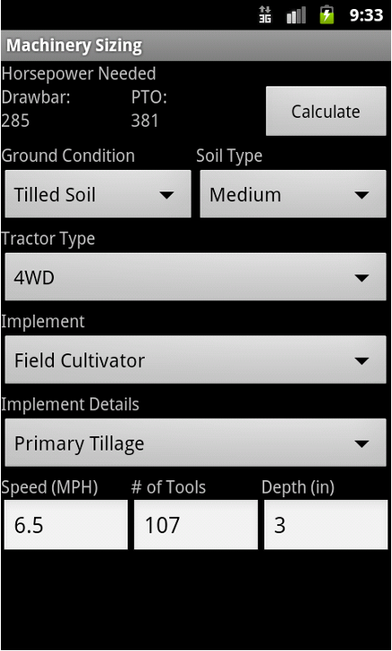

Introduction to Ag Informatics
Module 1, Lecture 4Joe Dvorak, joe.dvorak@uky.edu
Fall 2021
Outline for Today
- What is Design?
- Designing Software for Food and Agricultural Systems
- Heuristic Evaluation Exercise
- Conducting User & Design Research in Agriculture: Case Study
What is Design?
Envisioning solutions (concepts, methods, tools, systems)
to real-world problems.

- Understanding stakeholders: goals, needs, and information challenges
- Mapping out the design space: problems, assumptions, constraints
- Explore the solution space: data, user experiences, systems, scope
- Architecting prototype solutions, of varying fidelity, to test with users
- Creating a product specification, prototype, and/or plan for implementation
img src: Petre, van der Hoek & Quach, 2016
User Interface (UI)

User Experience (UX)

The Three Mile Island Accident, 1979
Jimmy Carter & the UI

Aftermath

- Series of malfunctions ->
- Relief valve indicator is ON = electricity running through connected loop ->
- Indicator light gave false evidence that the valve was shut
- Operators were not alerted to a critical error ->
- Partial meltdown and radiation leak.
- Most significant commercial nuclear accident in U.S.
https://americanhistory.si.edu/tmi/04-03.htm
User Interface
& User Experience Design
in Agriculture
A critical challenge in food and ag tech. Let's look at some examples.
Massey, 1973

Jamie Casey, via Farming Independent
Deere, 2019


Granular

https://agfundernews.com/dupont-acquires-farm-management-software-granular-300m.html
Tend

https://tend-com.zendesk.com/hc/en-us/articles/360037714152-Crop-Planning-in-Tend-"
Cover Crop Species Selector - Excel

Midwestern Cover Crop Council
Cover Crop Species Selector - Web

Northeastern Cover Crop Council
Machinery Sizing - The App


ASABE Standard D497.7
Machinery Sizing - The Standard
ASABE Standard D497.7

User & Design Research in Agriculture
Case Study:
Information Challenges in Small to Medium Scale Californian Agriculture
https://escholarship.org/uc/item/64n882qb, Raturi 2017, Modeling Sustainable Agriculture

Environmental Assessments
- Certification & Labeling
- Federal
- National Organic Program
- Non-Profit
- Certified Naturally Grown
- Product Specific
- Certified Humane
- Retailer Specific
- Whole Foods Rating
- Policy & Regulation
- State (California)
- Irrigated Lands Regulatory Program
- Global Warming Solutions Act
- Federal
- Food Quality Protection Act
- Food, Ag, Conservation Trade Act
- Voluntary
- Environmental Quality Incentives Program
but, there is a fundamental
Information Challenge
since farms are
complex, dynamic, and connected.
Environmental assessment methods and software are not designed for farmers' usability or usefulness. Farmers are incorrectly assumed to be:
- Homogenous, uniform, or somehow standardized.
- Static, predictable, or short-lived, or somehow time bound.
- Isolated, individual, or disconnected from other systems.
Methods and tools do not take into account how farmers collect, store, and use farm data. There is a disconnect between assessment methods and tools, and farmers' existing information toolboxes and workflows
Research Question
How do
small-to-medium scale,
sustainability-oriented farmers,
model their agricultural systems to
assess environmental performance?
Homework
- Optional further reading:
- Designing Sustainable Food Systems, Raturi et al. 2017
- Growing Plants, Raising Animals, and Feeding Communities through Connected Agriculture: An IoT Challenge, Raturi & Buckmaster, 2019
- Mobile Agriculture Design Toolkit, GSMA
- Digital agriculture to design sustainable agricultural systems, Basso & Antle, 2020
Next week: Data Discovery, Python, and Graphing
- Homework 1 (part 1.1 and 1.2) is due on next Wednesday @ 5pm (normally Monday)
Submit the link to your repository on
https://uk.instructure.com
Questions?
License

Introduction to Agricultural Informatics Course by Ankita Raturi, Purdue University is licensed under a Creative Commons Attribution-NonCommercial-ShareAlike 4.0 International License.
- You are free to:
- Share — copy and redistribute the material in any medium or format
- Adapt — remix, transform, and build upon the material
- Under the following terms:
- Attribution — You must give appropriate credit, provide a link to the license, and indicate if changes were made. You may do so in any reasonable manner, but not in any way that suggests the licensor endorses you or your use.
- NonCommercial — You may not use the material for commercial purposes.
- ShareAlike — If you remix, transform, or build upon the material, you must distribute your contributions under the same license as the original.
- No additional restrictions — You may not apply legal terms or technological measures that legally restrict others from doing anything the license permits.